Portal de Informes — guía para Administrador y Cliente
Documento interno
El Portal de Informes permite subir informes y documentos (HTML, PDF, Word, PowerPoint y video) y
controlar qué usuario puede ver cada uno. Tiene dos roles:
Administrador: sube y organiza informes, crea usuarios, asigna accesos, configura protecciones y ve métricas.
Cliente: ingresa y ve, dentro de carpetas, solo los informes que se le asignaron.
Parte 1 · Administrador
1. Ingresar al panel
Abrí la dirección del portal e ingresá con tu email y contraseña de administrador. Si iniciás sesión con un
usuario que tiene rol admin, verás el panel de administración; si no, verás la vista de cliente.
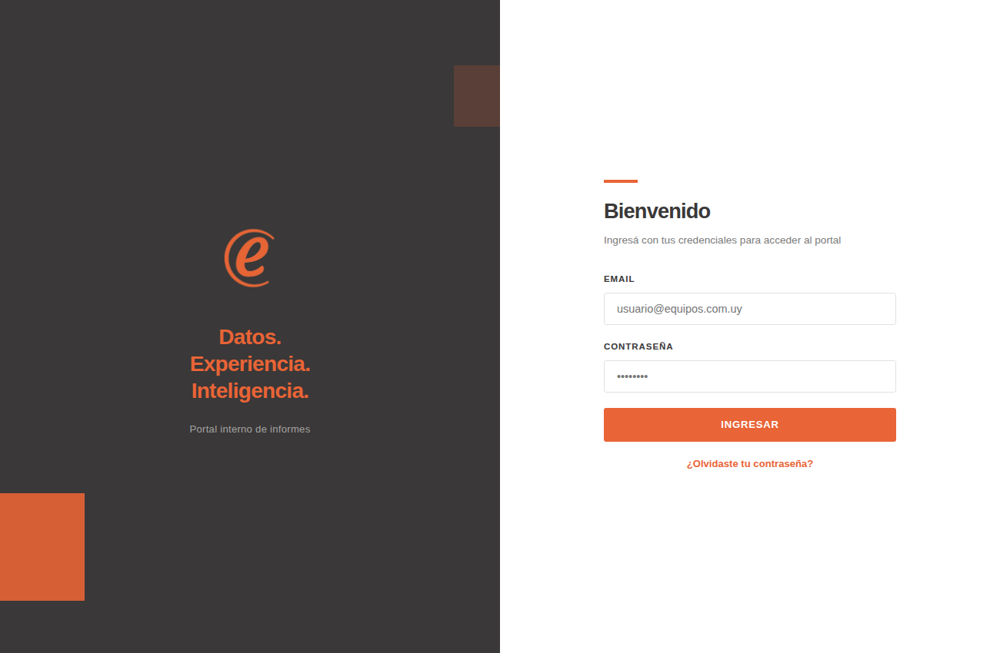
Pantalla de ingreso. El enlace «¿Olvidaste tu contraseña?» envía un correo de recuperación desde notificaciones@equipos.com.uy.
2. El panel de administración
El menú lateral tiene estas secciones:
⭐ Mis informes — los informes que te asignaron, para tenerlos a mano (ver punto 15).
Informes — subir, organizar en carpetas, actualizar y compartir documentos.
Usuarios — crear/importar usuarios y administrar sus accesos.
Permisos — asignar, por usuario, qué informes ve y con qué protecciones.
Matriz usuarios/informes — quién tiene acceso a qué, de un vistazo (ver punto 14).
Métricas — accesos al portal y uso de los dashboards.
Docs de clientes — documentos que subieron los clientes.
⚙️ Configuración → Correos — textos de los correos que manda el portal y registro de envíos (ver punto 13).
3. Subir un informe
Entrá a Informes.
Si querés ubicarlo dentro de una carpeta, elegila en «Subir a la carpeta» (por defecto va a la raíz).
Arrastrá el archivo a la zona de subida o hacé clic para elegirlo. Podés subir varios a la vez.
Formatos soportados: HTML, PDF, Word (.doc/.docx), PowerPoint (.ppt/.pptx) y video (.mp4/.webm/.mov…).
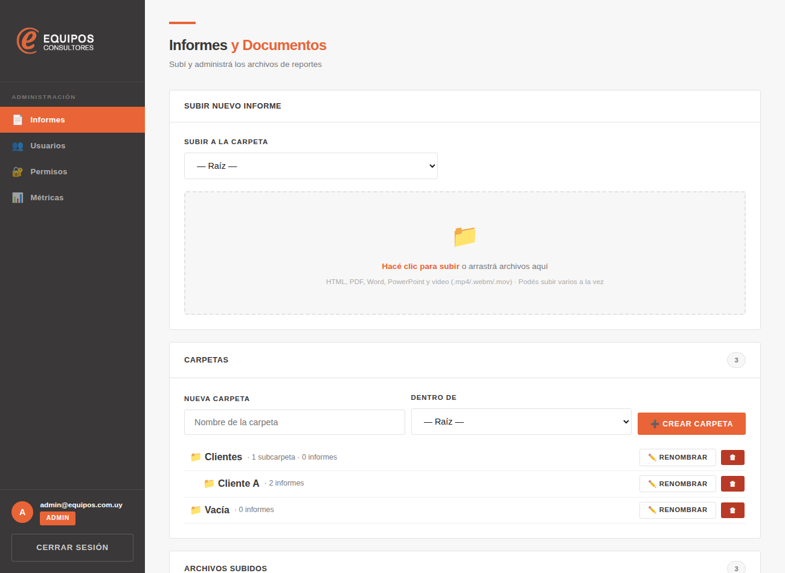
Sección «Informes»: zona de subida, carpetas y la tabla de archivos subidos (con buscador por nombre).
4. Organizar en carpetas
En la tarjeta Carpetas podés crear carpetas (incluso anidadas) para ordenar los informes:
Escribí el nombre en «Nueva carpeta», elegí opcionalmente una carpeta padre en «Dentro de» y tocá Crear carpeta.
Para mover un informe, usá el selector de la columna Carpeta en la tabla de archivos.
Cada carpeta se puede Renombrar o Borrar. Al borrar una carpeta con contenido, sus subcarpetas e
informes se mueven a la carpeta padre — no se borra ningún informe.
El cliente ve una carpeta solo si dentro (a cualquier nivel) tiene algún informe asignado a él.
5. Reescribir (actualizar) un informe
El botón 🔄 Reescribir de cada fila permite reemplazar el contenido de un informe ya
cargado subiendo un archivo nuevo, conservando el mismo informe (sus permisos, accesos y enlace público).
El archivo nuevo debe ser del mismo tipo (una web HTML se reemplaza con HTML, etc.).
Si el informe tenía un enlace público, se actualiza automáticamente para que siga funcionando.
Si el informe está encriptado (🔒), te pide su clave y el archivo nuevo se encripta con la misma: los
clientes lo siguen abriendo con la misma clave y el enlace público no cambia (punto 16).
6. Enlace público
Con 🔗 Link público generás un enlace que permite ver ese informe sin iniciar sesión,
desde cualquier navegador. Podés copiarlo, abrirlo, ver cuántos accesos tuvo y desactivarlo cuando quieras.
Cualquiera con el enlace puede ver el informe. Usalo solo para material que pueda ser público.
Para un informe encriptado el enlace lleva la clave del archivo y se genera ingresando la clave del informe
(ver punto 16).
7. Asignar usuarios a un informe
Desde la propia lista de informes, el botón 👥 Usuarios abre un diálogo para elegir
qué usuarios pueden ver ese informe, con una lista filtrable por email. Los cambios se guardan solos.
Arriba de la lista está la casilla «📧 Avisar al usuario por correo al habilitar un informe» (marcada por
defecto): cada usuario que marques recibe un aviso con el nombre del informe y el enlace al portal. Desmarcala si
estás preparando accesos antes de publicar y no querés que se enteren todavía.
En la lista también aparecen los administradores, con la insignia admin: marcar un
informe a un admin se lo deja a mano en su sección ⭐ Mis informes. Para ellos el aviso por correo va en una
casilla aparte, «Avisar también a los admins», que viene destildada. A los admins no se les muestran
protecciones ni caducidad.
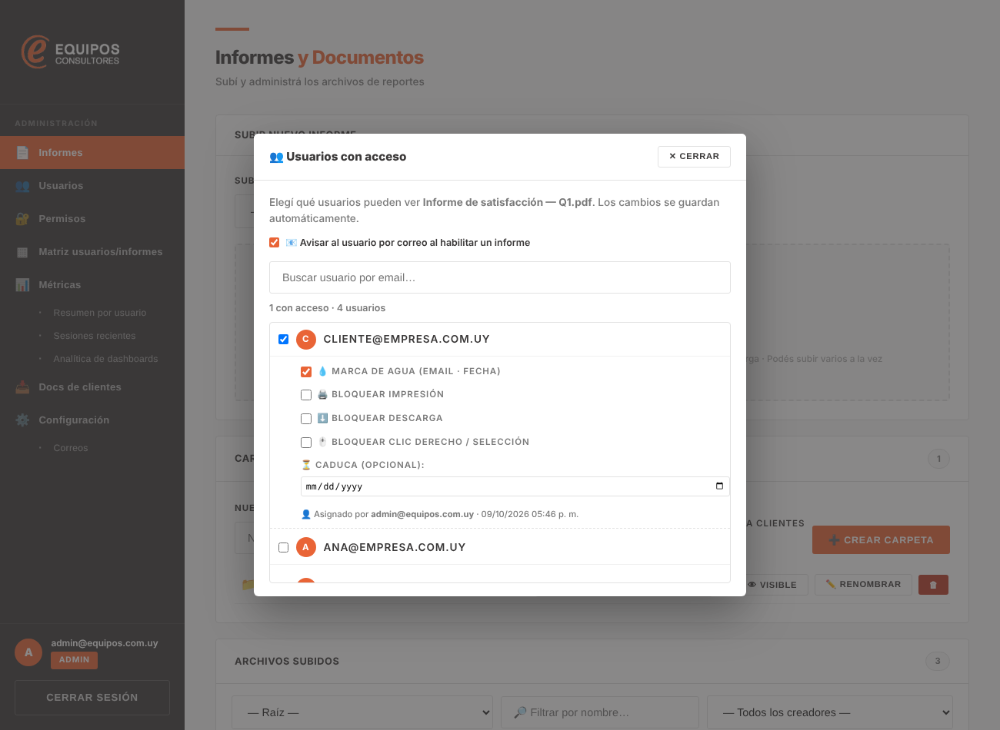
Diálogo «Usuarios con acceso»: buscá y marcá los usuarios que pueden ver el informe.
8. Gestión de usuarios
Crear un usuario
En Usuarios → Crear nuevo usuario escribís solo el email y tocás ＋ Crear. No hay que inventar
ni transmitir ninguna contraseña: el portal crea la cuenta y le manda al usuario, desde
notificaciones@equipos.com.uy, un correo de bienvenida con un enlace para crear la suya. Nadie del equipo conoce
la contraseña del cliente.
Si el correo salió, vas a ver «✅ Usuario creado. Le enviamos un correo…».
Si el correo no salió (por ejemplo, un problema con la cuenta de correo), el usuario igual queda
creado y se abre una ventana con el enlace de acceso y el motivo del fallo. Copialo con
📋 Copiar y pasáselo al usuario por un canal privado.
Si el email ya tenía cuenta, no se crea otra ni se cambia su contraseña: el portal te avisa y te ofrece
📨 Reenviar acceso.
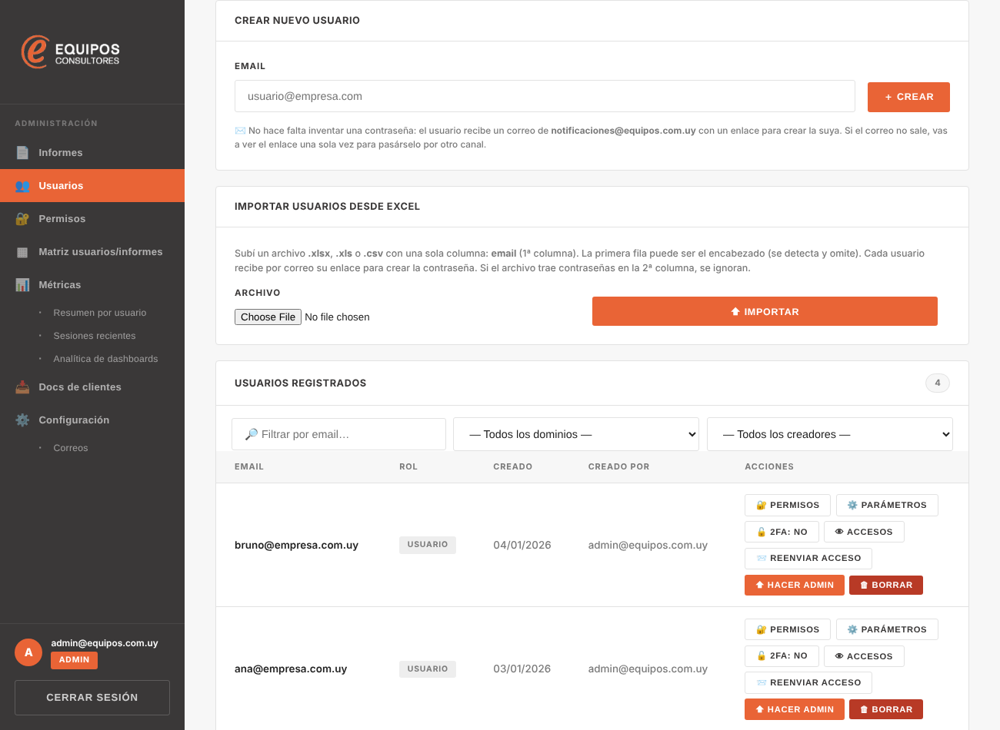
Sección «Usuarios»: alta con solo el email, importación desde Excel y tabla con buscador y acciones.
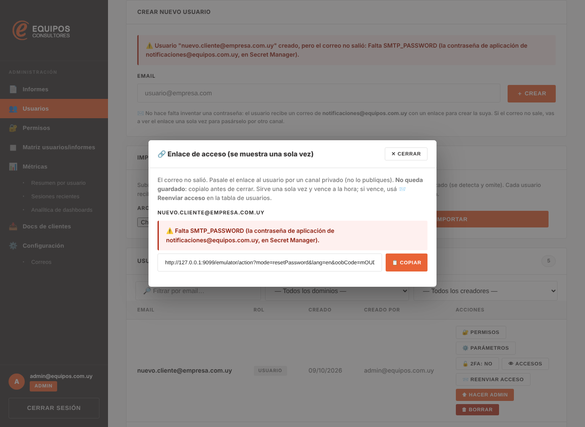
Si el correo no sale, el enlace de acceso se muestra una sola vez para copiarlo.
El enlace de acceso no queda guardado en ningún lado: copialo antes de cerrar la ventana.
Sirve una sola vez y vence a la hora. Si vence, usá 📨 Reenviar acceso (o el usuario puede pedir otro
con «¿Olvidaste tu contraseña?»).
Importar usuarios desde Excel
En Importar usuarios desde Excel subís un .xlsx, .xls o .csv con una sola columna: el
email (la primera fila puede ser el encabezado). A cada usuario le llega su correo de bienvenida. Si el archivo trae
contraseñas en una segunda columna (planillas viejas), se ignoran y el portal te avisa.
Al terminar, el resumen separa: creados y notificados · creados sin correo (con el motivo; sus enlaces
se muestran una vez para copiarlos) · ya existían · inválidos.
La cuenta de correo tiene un tope diario de envíos (compartido con el sistema de paneles). Si la
importación tiene más usuarios que los correos disponibles en el día, se rechaza antes de crear a nadie: dividí el
archivo o esperá al día siguiente. El contador está en Configuración → Correos.
Acciones de cada usuario
La tabla tiene un buscador por email y filtros por dominio y por creador. En cada usuario:
🔐 Permisos — ir a asignarle informes (ver punto 10). También en los administradores.
⚙️ Parámetros — valores por usuario para los informes HTML (ver punto 9). También en los administradores.
👁 Accesos — ver qué informes tiene asignados.
📨 Reenviar acceso — genera un enlace nuevo y se lo manda por correo. Si el usuario nunca ingresó recibe
el correo de bienvenida; si ya ingresó alguna vez, el de restablecer contraseña. Sirve cuando el
usuario perdió el correo o se le venció el enlace, sin tener que borrarlo y crearlo de nuevo. Queda registrado
quién lo pidió y cuándo.
⬆ Hacer admin / ⬇ Quitar admin — cambiar el rol.
🗑 Borrar — elimina el usuario y sus permisos del portal.
Al borrar un usuario se elimina su registro y sus permisos, pero su credencial queda en
Firebase Authentication. Si más adelante lo volvés a crear con el mismo email, el portal le devuelve el acceso y te
ofrece 📨 Reenviar acceso. Para eliminar la credencial por completo, borrala en
Firebase Console → Authentication.
9. Parámetros por usuario
El botón ⚙️ Parámetros permite definir, por usuario, pares clave/valor
(por ejemplo clienteId = 777, region = norte, plan = premium). El portal se los
envía a los informes HTML de ese usuario, que pueden renderizarse en función de ellos.
Los administradores también pueden tener parámetros (incluso los propios). Un admin con parámetros ve los
dashboards parametrizados con esos valores, tanto en la vista previa (👁) como en ⭐ Mis informes, igual
que los vería un cliente con los mismos parámetros. Si cambiás tus propios parámetros, el próximo informe que abras
ya los usa, sin recargar la página.
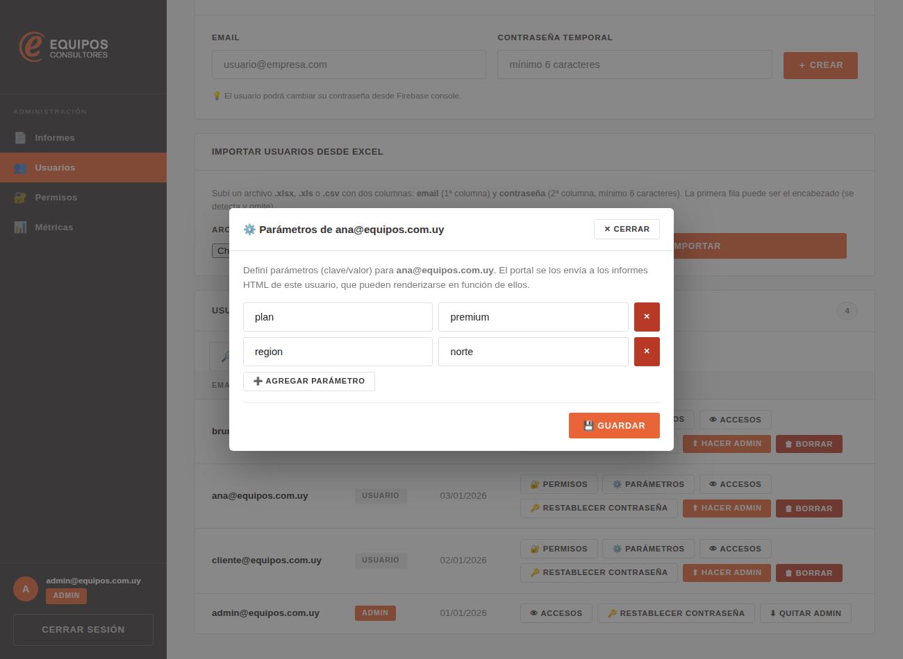
Parámetros de un usuario: agregá los pares clave/valor y guardá.
10. Permisos y protecciones
En Permisos elegís un usuario y marcás los informes a los que puede acceder. Por cada informe asignado podés
activar protecciones:
💧 Marca de agua — estampa el email del usuario + fecha/hora sobre el documento.
🖨 Bloquear impresión.
⬇ Bloquear descarga.
🖱 Bloquear clic derecho / selección.
Los cambios se guardan automáticamente. (Esto mismo se puede hacer, más rápido para un informe puntual, con el
botón «Usuarios» del punto 7.)
En el selector también aparecen los administradores (marcados «· admin»). A un admin se le
marcan informes para que los tenga a mano en ⭐ Mis informes; igual ve y administra todos, así que no se le
muestran protecciones ni caducidad, y la casilla de aviso por correo viene destildada.
Aviso por correo al habilitar un informe
Cada vez que le habilitás un informe a un usuario, el portal le manda un correo «Nuevo informe» con el
nombre del informe, su carpeta, la fecha de caducidad (si la configuraste) y el enlace al portal.
La casilla «📧 Avisar al usuario por correo al habilitar un informe» (arriba de la lista, marcada por
defecto) permite habilitar sin avisar.
El correo sale en el momento, unos segundos después de marcar el informe, desde cualquiera de los tres
lugares donde se asignan informes: Permisos, el diálogo 👥 Usuarios del informe y
Usuarios → 🔐 Permisos. Abajo a la derecha aparece la confirmación
«📧 Se avisó por correo a …» o, si el correo no salió, el motivo (el acceso queda dado igual).
Si le habilitás varios informes seguidos al mismo usuario, le llega un solo correo con la lista.
Si cerrás la pestaña enseguida de asignar, el aviso igual sale: lo manda el servidor pasados unos minutos
(la «espera de respaldo» de Configuración → Correos).
Si destildás el informe antes de que salga el aviso, no se manda nada.
No generan correo: quitar un acceso, cambiar una protección o la caducidad, ni volver a marcar un informe
que ya tenía.
Un administrador recibe el aviso solo si dejás tildada la casilla (para ellos viene destildada): esos
correos salen del mismo cupo diario que los de los clientes.
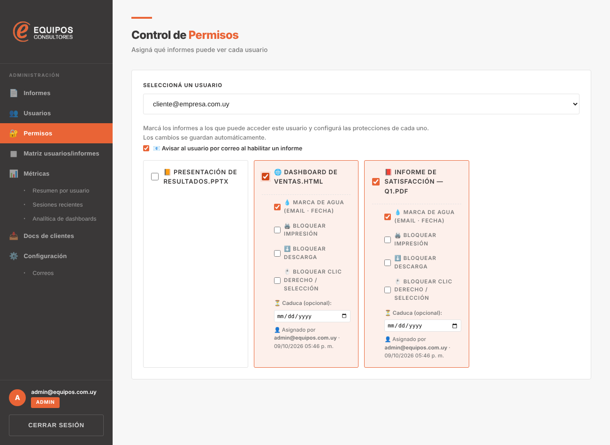
Sección «Permisos»: informes asignados a un usuario y las protecciones de cada uno.
Las protecciones son disuasivas, no infalibles: en una web no se puede impedir una captura de
pantalla. La más efectiva es la marca de agua, que deja rastro de quién vio el documento.
11. Métricas
En Métricas se registra cada acceso al portal: quién ingresa, cuántas veces, por cuánto
tiempo y desde qué IP. También hay «Analítica de dashboards»: por informe, qué pestañas/secciones usan los
clientes (visitas y tiempo). Lo que los administradores abren desde ⭐ Mis informes queda marcado como uso
interno y no se suma a la analítica de dashboards de los clientes.
12. Informes HTML dinámicos avanzado
Un mismo informe HTML puede mostrar contenido distinto según el usuario, usando los parámetros del punto 9.
Hay dos usos:
Personalizar datos: el HTML recibe email, uid y los params del usuario y
filtra/arma su vista con ellos.
Mostrar/ocultar secciones sin programar: marcando cada sección con data-portal-show="region=norte"
o data-portal-hide="…".
El detalle técnico, el bloque a pegar en cada HTML y un ejemplo funcional están en el README del
repositorio y en examples/dashboard-parametros.html.
13. Configuración → Correos
En el menú ⚙️ Configuración → Correos se manejan los correos que manda el portal, sin pedirle cambios al
desarrollador. Todos salen desde notificaciones@equipos.com.uy.
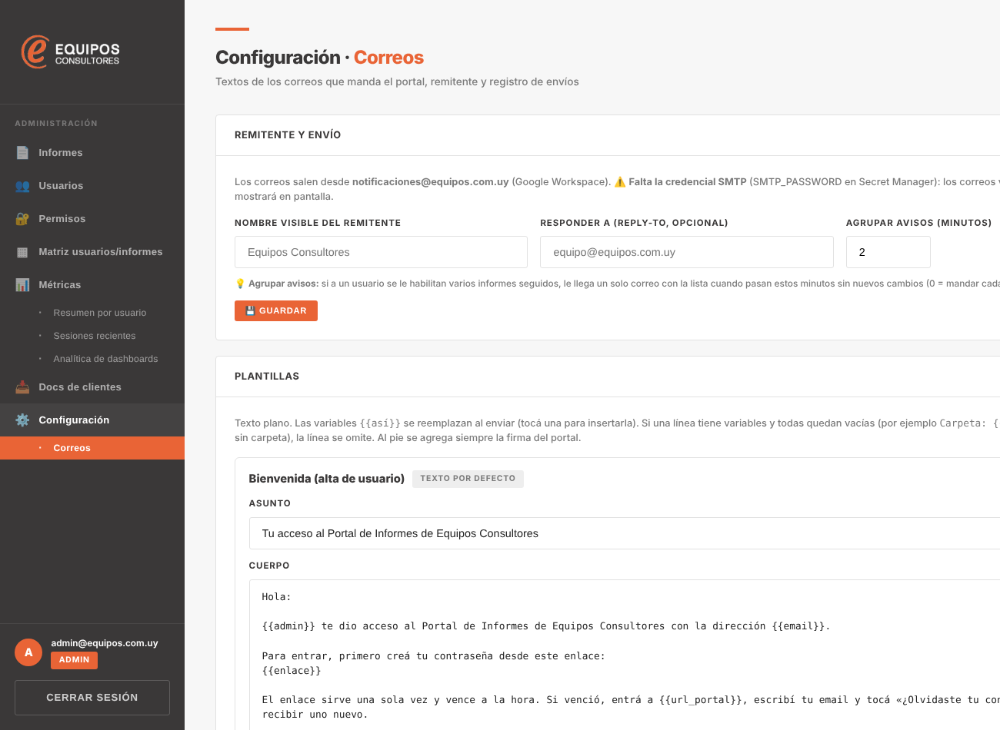
Configuración → Correos: remitente, plantillas editables y registro de envíos.
Remitente y envío
Nombre visible del remitente — cómo aparece en la bandeja (por defecto «Equipos Consultores»).
Responder a (Reply-To) — opcional: a dónde llegan las respuestas de los clientes.
Espera de respaldo (minutos) — el aviso «Nuevo informe» sale en el momento desde el panel; si el panel
no llegó a mandarlo (por ejemplo, se cerró la pestaña enseguida), el servidor lo manda pasado este tiempo.
Arriba de «Últimos envíos» se ven los avisos en espera; si alguno lleva demasiado, se marca en rojo.
Plantillas
Hay tres: Bienvenida (alta de usuario), Restablecer contraseña y Nuevo informe. De cada una
editás el asunto y el cuerpo (texto plano) y tocás 💾 Guardar: se aplica al
siguiente correo. Al pie se agrega siempre la firma del portal.
Las variables se reemplazan al enviar; tocá una para insertarla donde está el cursor:
{{email}} — email del destinatario (todas).
{{enlace}} — enlace para crear la contraseña (Bienvenida y Restablecer; obligatoria en ellas).
{{url_portal}} — dirección del portal (todas).
{{admin}} — email del admin que dio el alta o el acceso (Bienvenida y Nuevo informe).
{{informe}} — nombre del informe; si son varios, la lista (Nuevo informe).
{{carpeta}} — carpeta del informe, si tiene (Nuevo informe).
{{vence}} — fecha de caducidad del acceso, si se configuró (Nuevo informe).
Si una línea tiene variables y todas quedan vacías (por ejemplo Carpeta: {{carpeta}} en un
informe sin carpeta), esa línea no aparece en el correo.
Una variable mal escrita o que no corresponde a esa plantilla se marca en rojo y no deja guardar.
👁 Vista previa muestra cómo queda con datos de ejemplo.
✉️ Enviarme una prueba te manda a vos la plantilla tal como está en pantalla (aunque no
la hayas guardado), con [PRUEBA] en el asunto.
↺ Restaurar texto por defecto vuelve al texto original.
«Nuevo informe» tiene el interruptor «Enviar este correo» para apagar todos los avisos de asignación.
Últimos envíos
Lista los últimos 100 correos con su estado (enviado, fallido u omitido), el
motivo si falló, los intentos y quién lo disparó. Se puede filtrar «Solo fallidos». Arriba se ve el contador de
correos enviados en las últimas 24 h contra el cupo diario. El registro se borra solo a los 90 días.
Si un correo figura como fallido, la acción (alta o asignación) igual quedó hecha.
Para un alta, usá 📨 Reenviar acceso; para un aviso de informe, avisale al cliente por otro medio.
14. Matriz usuarios / informes
La Matriz usuarios/informes muestra en una sola tabla qué usuario tiene acceso a qué informe (✓). Para que
no se llene de columnas vacías, solo aparecen los usuarios que tienen al menos un ✓ en los informes que se están
viendo. Al escribir en «🔎 Informe…» la tabla se angosta a los usuarios de esos informes; el filtro
«🔎 Usuario (email)…» se aplica encima.
Arriba de la tabla se indica cuántos se muestran: «Mostrando 12 de 87 usuarios (los demás no tienen acceso a
los informes filtrados)».
Si nadie tiene acceso a los informes filtrados, se ve «Ningún usuario tiene acceso a estos informes».
Mostrar todos los usuarios: vuelve a una columna por usuario, aunque no tenga nada (útil para ver quién
no tiene acceso).
Ocultar informes sin usuarios: esconde las filas de informes sin ningún ✓ entre los usuarios mostrados.
Las dos casillas se recuerdan en tu navegador.
Los administradores con informes asignados aparecen como columna, marcados ADMIN.
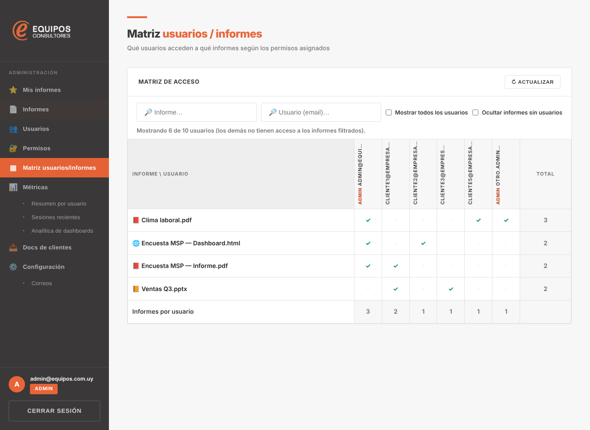
Matriz: solo los usuarios con algún acceso a los informes visibles (los admins, marcados).
15. Mis informes (para administradores)
Un administrador ve todos los informes en Informes, pero puede tener a mano «los suyos» (por ejemplo, los
del estudio que sigue) en ⭐ Mis informes, arriba en el menú. Se navega por carpetas igual que la vista del
cliente.
Otro admin (o vos mismo) te marca informes desde Permisos, el diálogo 👥 Usuarios del informe o la
tabla de usuarios (🔐 Permisos).
Entrá a ⭐ Mis informes y hacé clic en el informe para abrirlo.
Se abre sin protecciones (como la vista previa) y con tus parámetros (punto 9).
Si no tenés informes asignados, la sección te lo indica con un enlace a Permisos.
Al ingresar seguís entrando en Informes; «Mis informes» es un atajo, no cambia tu pantalla de inicio ni lo
que podés ver.
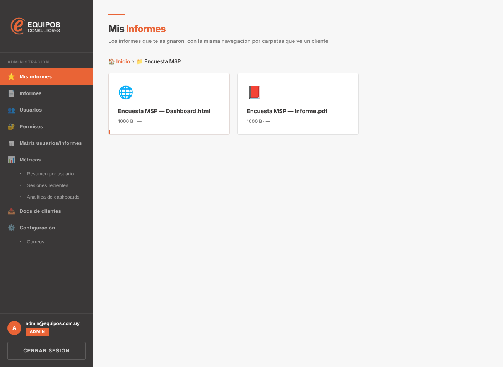
«Mis informes»: los informes asignados al administrador, dentro de sus carpetas.
16. Informes encriptados con clave
Para informes sensibles (datos de un cliente puntual, resultados antes de publicarse) podés encriptarlos:
el archivo se cifra antes de subirlo y solo se ve ingresando una clave. Aunque el archivo se filtre (un enlace
copiado, un acceso mal asignado, una cuenta comprometida), sin la clave no se puede leer. Ni el portal ni Google
guardan la clave.
El archivo cifrado es un .gpg estándar (OpenPGP, igual que gpg -c): además de verse en el
portal, se abre en cualquier computadora con gpg y la misma clave, aunque el portal no esté disponible.
Subir un informe encriptado desde el portal
En Subir nuevo informe, tildá 🔒 Encriptar con clave.
Escribí la clave dos veces (mínimo 10 caracteres), o tocá 🎲 Generar clave para
que el portal proponga una (20 caracteres en grupos de 4). Con 📋 Copiar la copiás.
Subí el archivo como siempre. Si subís varios a la vez, todos usan la misma clave.
Al terminar aparece el aviso «Guardá la clave: no se puede recuperar». En la lista, el informe muestra
🔒 junto al nombre.
Video no se puede encriptar, ni archivos de más de 100 MB: el portal te avisa y te deja elegir
entre subirlos sin encriptar o dejarlos afuera.
Asignalo a los usuarios como cualquier otro informe. Las protecciones (marca de agua, impresión, descarga,
copia), los parámetros y la analítica funcionan igual.
Subir un .gpg cifrado en tu máquina
Si preferís que el portal nunca vea el original, cifralo vos con gpg y subí el .gpg (sin tildar
nada): el portal lo reconoce, no pide clave y lo muestra con el nombre sin .gpg.
gpg te pide la clave dos veces y genera informe.html.gpg.
Tiene que estar cifrado con contraseña (gpg -c). Uno cifrado para la clave GPG de una
persona (gpg -e) se rechaza y no se sube.
Un archivo terminado en .gpg que no es OpenPGP se sube como archivo común, con un aviso.
Ver y descargar
👁 Ver y ⬇ Descargar te piden la clave; la descarga es el
archivo ya descifrado, con su nombre original.
🔐 Descargar cifrado (.gpg) baja el archivo tal como está guardado. Los clientes tienen
las mismas dos descargas en el visor, salvo que les bloquees la descarga.
Descifrar con gpg
gpg -d informe.html.gpg > informe.html
gpg pide la clave del informe. Si no tenés gpg: en Windows instalá Gpg4win (gpg4win.org); en Mac,
GPG Suite (gpgtools.org) o brew install gnupg; en Linux ya viene instalado.
Reescribir un informe encriptado
Con 🔄 Reescribir y el archivo nuevo sin cifrar: el portal te pide la clave y lo
encripta con la misma. Los clientes lo abren con la misma clave y el enlace público no cambia.
Con un .gpg nuevo hecho en tu máquina: el portal te avisa que el enlace público cambia y, al
terminar, te pide la clave para mostrarte el enlace nuevo. Volvé a enviarlo.
Cómo enviar la clave
Enviá la clave al cliente por un canal distinto al correo de aviso del portal (WhatsApp,
llamada, otro correo). Si la clave viaja junto con el aviso, quien acceda a ese correo tiene todo.
Si se pierde la clave
No hay forma de recuperarla: es así por diseño. Conservá el archivo original: si se pierde la clave, borrá el
informe y volvé a subirlo con una clave nueva (y volvé a asignarlo).
Enlace público de un informe encriptado
Tocá 🔗 Link público, ingresá la clave del informe y generá el enlace.
El enlace termina en #k=…: es la clave de sesión del archivo (no tu clave). Esa parte
nunca llega al servidor y no queda guardada en ningún lado. Quien abre el enlace completo ve el informe
sin escribir nada.
Si después volvés a abrir el diálogo, el portal te pide la clave para mostrarte el enlace completo (es el mismo
de antes). Las estadísticas de accesos se ven igual.
Si alguien abre el enlace sin la parte #k=…, el portal le pide la clave del informe.
En el diálogo, «Descifrar en tu máquina con gpg» muestra el comando para abrir el .gpg con la clave
de sesión (gpg --override-session-key '9:…' -d), sin la clave del informe.
Compartí el enlace completo solo con quien tenga que verlo: con el #k=… no hace falta la clave.
17. Permisos por carpeta
Además de habilitar informes de a uno, a un usuario le podés asignar una carpeta: ve todos sus informes y
los de todas sus subcarpetas, también los que subas después, y recibe el aviso «Nuevo informe» igual que hoy.
Sirve, por ejemplo, para darle a un cliente la carpeta de su estudio y no tener que habilitar cada informe.
Asignar una carpeta
En Permisos, elegí el usuario. Arriba de los informes está la sección 📁 Carpetas, con el árbol.
Tildá la carpeta. Debajo aparecen sus protecciones y su caducidad, que valen para todos sus informes.
La casilla «Avisar por correo, también cuando se suban informes nuevos a esta carpeta» decide si se le
avisa ahora (un solo correo con todos los informes de la carpeta) y cada vez que subas uno nuevo.
También podés hacerlo desde el árbol de carpetas, en Informes: el botón 👥 Usuarios
de cada carpeta abre la lista de usuarios con un check, igual que el de cada informe. Las dos formas guardan lo mismo.
Qué heredan las subcarpetas
Las subcarpetas de una carpeta asignada aparecen tildadas en gris con «incluida por …»: no se pueden
destildar solas. Si hay que excluir algo, reorganizá las carpetas.
En la grilla de informes, los que el usuario ve por una carpeta muestran «📁 vía …». Si lo tildás, le
das además una asignación directa, con protecciones o caducidad propias.
Precedencia: si un informe tiene asignación directa, valen sus protecciones y su caducidad. Si no, valen
las de la carpeta asignada más cercana. Destildar la asignación directa no le quita el informe si una carpeta
se lo sigue dando («también vía …»).
En la matriz, el acceso por carpeta se ve como 📁 y el directo como ✓. El contador
👤 de cada informe cuenta los dos.
Mover, borrar y la demora de unos segundos
Subir o mover un informe a una carpeta asignada se lo da al usuario; sacarlo se lo quita (salvo que lo tenga
por otra vía). Mover una carpeta, con todo lo que tiene, adentro de una asignada también se la da.
Al borrar una carpeta asignada, la confirmación te dice cuántos usuarios pierden acceso a su contenido.
Su contenido pasa a la carpeta de arriba, pero nadie gana acceso a esa carpeta de arriba.
El acceso se recalcula solo, en 1 a 3 segundos. Si un cliente abre justo un informe recién habilitado,
ve «Preparando el acceso…» un momento.
En Configuración → Correos → Accesos por carpeta, el botón 🔄 Recalcular accesos
recalcula a todos y verifica que no falte nada («0 diferencias»).
Qué ve el cliente
El cliente navega desde sus carpetas: en su inicio aparecen las carpetas que le asignaste (y, para cada
informe suelto que le habilitaste, la carpeta donde está), sin las carpetas de arriba. Por ejemplo, con
Clientes / Cliente X / Estudio 1 y solo «Estudio 1» asignada, ve «📁 Estudio 1» en su inicio y nunca
ve los nombres «Clientes» ni «Cliente X», ni en pantalla ni en los correos. Las carpetas ocultas siguen
funcionando igual: su contenido aparece en la carpeta visible más cercana.
Parte 2 · Cliente
1. Primer ingreso, ingresar y recuperar contraseña
Primer ingreso
Cuando te dan de alta, recibís un correo de Equipos Consultores <notificaciones@equipos.com.uy>
con el asunto «Tu acceso al Portal de Informes de Equipos Consultores» (revisá también la carpeta de spam).
Abrí el enlace del correo y elegí tu contraseña.
Ingresá al portal con tu email y la contraseña que elegiste.
El enlace sirve una sola vez y vence a la hora. Si venció, entrá al portal, escribí tu
email y tocá «¿Olvidaste tu contraseña?» para recibir uno nuevo.
Ingresar y recuperar la contraseña
Ingresá con tu email y tu contraseña. Si no la recordás, tocá «¿Olvidaste tu contraseña?», escribí tu email
y recibirás un correo de notificaciones@equipos.com.uy con un enlace para elegir una nueva (revisá también la
carpeta de spam).
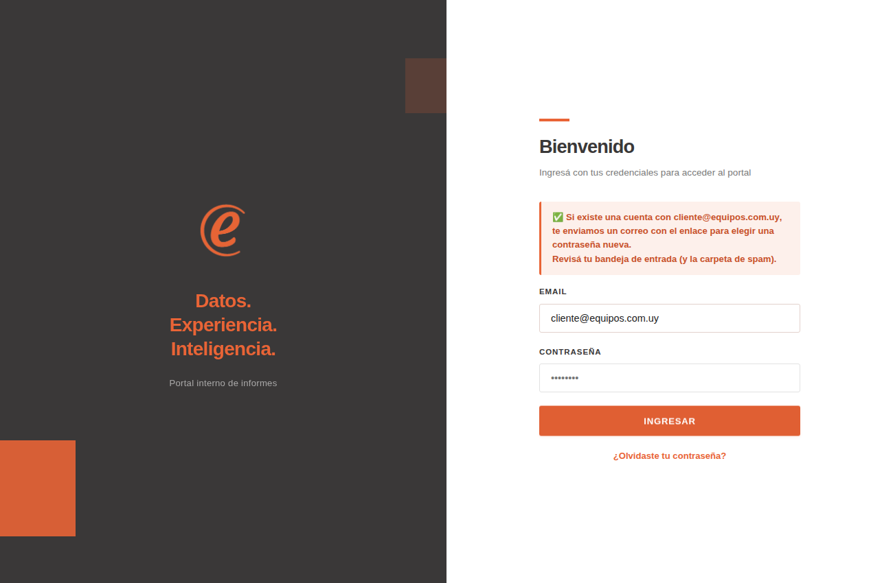
Recuperación de contraseña desde la pantalla de ingreso.
2. Ver mis informes y carpetas
En «Mis Informes» ves las carpetas y los informes que te asignaron. Si te dieron acceso a una carpeta, ves
todos sus informes y subcarpetas, y los informes nuevos aparecen solos, sin recargar. Hacé clic en una
carpeta para entrar y ver su contenido; usá las «migas de pan» (🏠 Inicio › Carpeta › …) para volver.
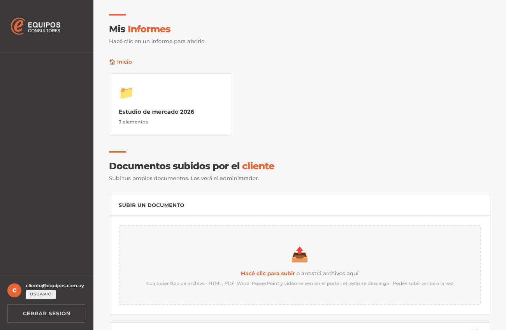
Vista del cliente: carpetas e informes asignados.
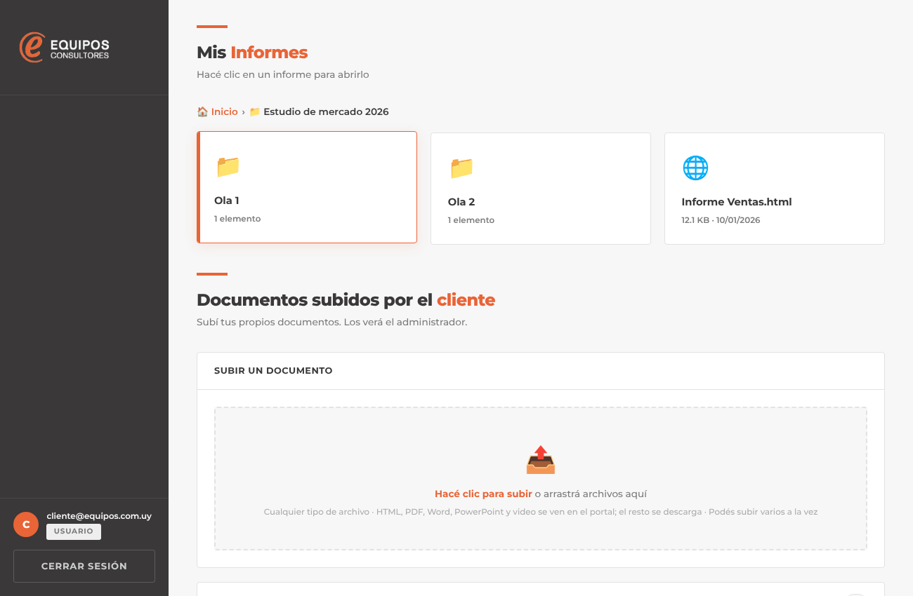
Dentro de una carpeta, con la ruta de navegación arriba.
3. Abrir un informe
Hacé clic en un informe para abrirlo dentro del portal: los PDF, Word, PowerPoint, HTML y video se ven
directamente, sin descargar. Según lo que haya configurado el administrador, el documento puede mostrar una
marca de agua con tu email y fecha, o tener bloqueadas la impresión, la descarga o el clic derecho.
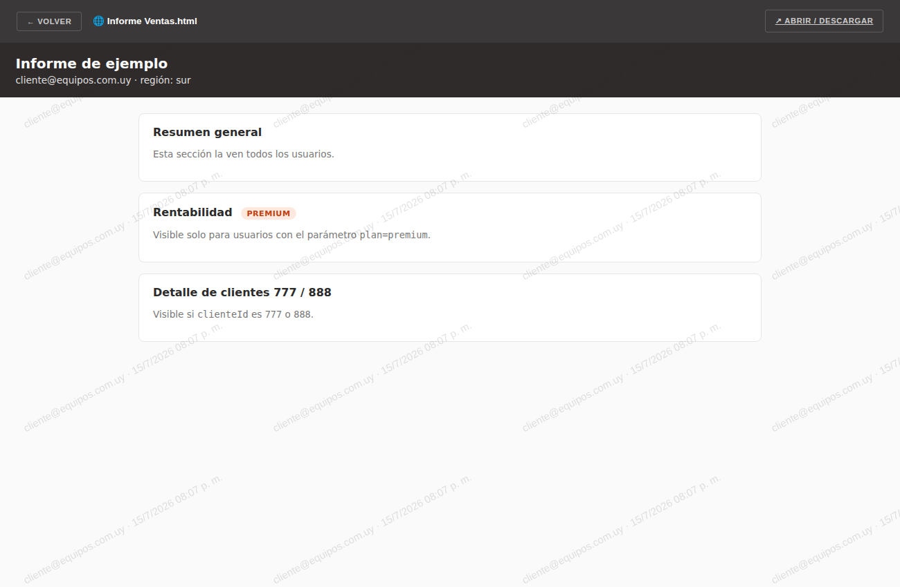
Un informe abierto en el visor del portal (con marca de agua).
Con ← Volver regresás a la lista de informes.
4. Avisos por correo
Cuando te habilitan un informe nuevo, recibís un correo de notificaciones@equipos.com.uy con el nombre del
informe (o la lista, si son varios), la carpeta donde está, hasta cuándo está disponible (si tiene vencimiento) y el
enlace al portal. Ingresá al portal para verlo.
5. Informes con clave (🔒)
Algunos informes están encriptados y se marcan con 🔒. Para abrirlos necesitás la clave que
te manda Equipos Consultores por un canal aparte (no viene en el correo de aviso).
Hacé clic en el informe. Se abre un cuadro «🔒 Informe encriptado».
Escribí la clave y tocá Abrir. Si dice «Clave incorrecta», revisala y probá de nuevo.
Mientras no cierres la pestaña ni la sesión, al volver a abrir el mismo informe no te la vuelve a pedir.
Si la descarga está habilitada, en el visor tenés ⬇ Descargar (el archivo ya abierto) y
🔐 Descargar cifrado (.gpg), para guardarlo o reenviarlo protegido. El .gpg se abre con
gpg -d informe.html.gpg > informe.html y la misma clave (gpg: Gpg4win en Windows,
GPG Suite o brew install gnupg en Mac, ya instalado en Linux).
Si no tenés la clave o la perdiste, pedila a Equipos Consultores: el portal no la guarda y no la puede mostrar.
Si te pasaron un enlace público de un informe encriptado, abrilo completo (con la parte que sigue a
#) y se ve sin escribir nada. Si te pide la clave, es que el enlace llegó cortado.